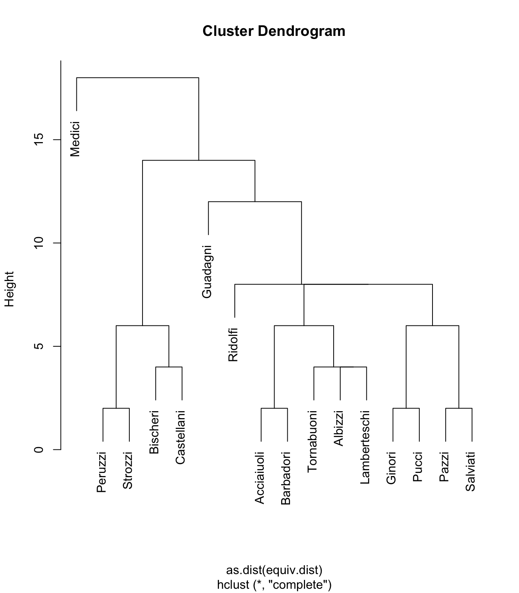
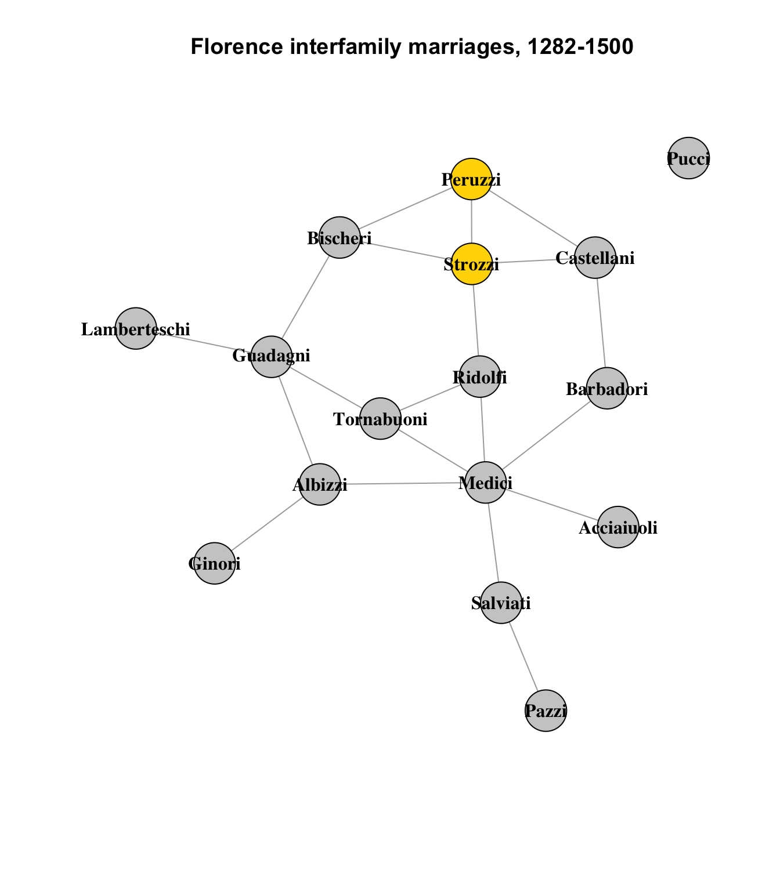
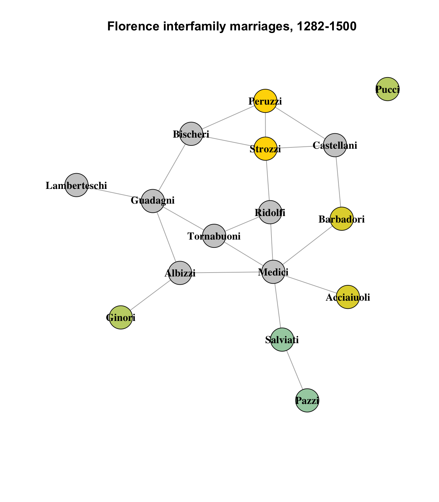
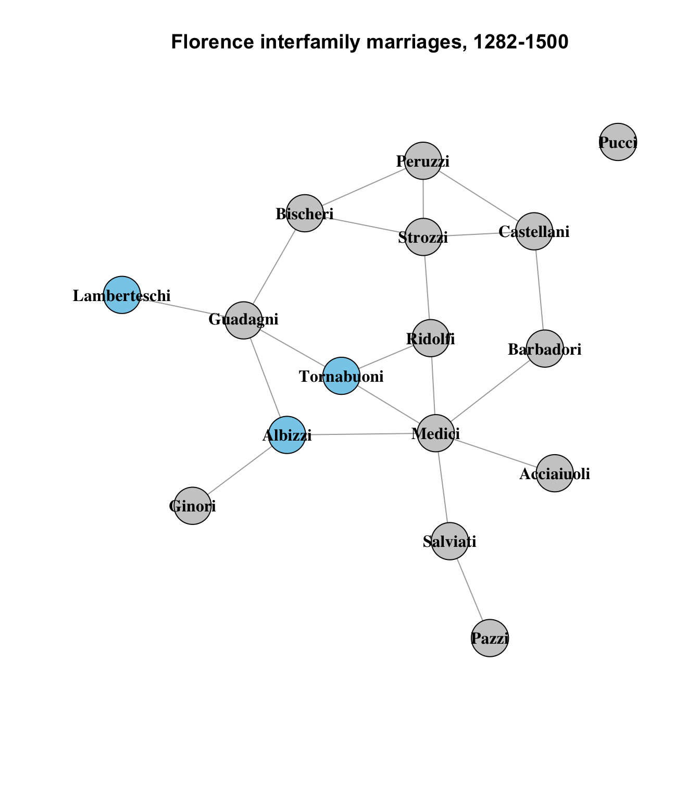
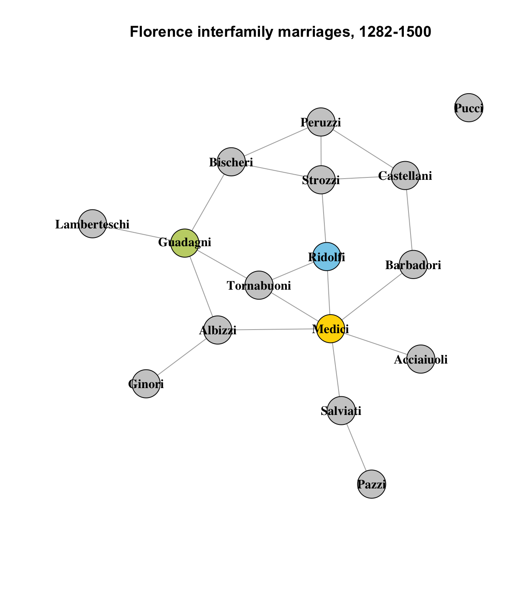
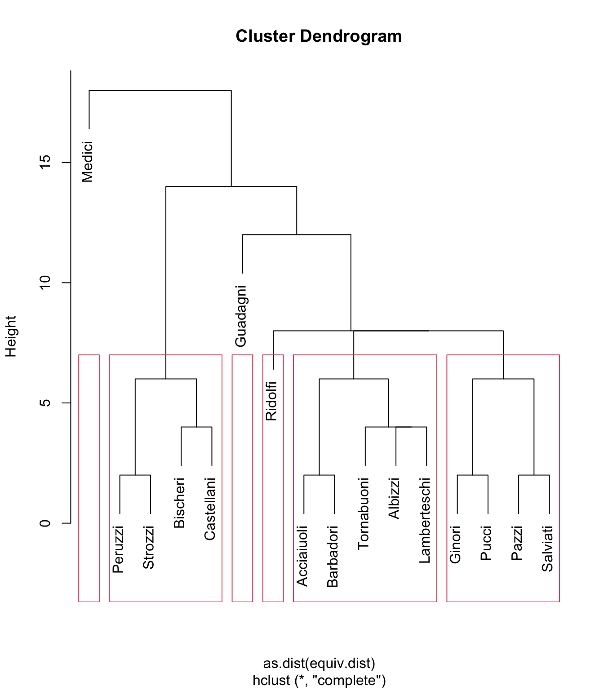
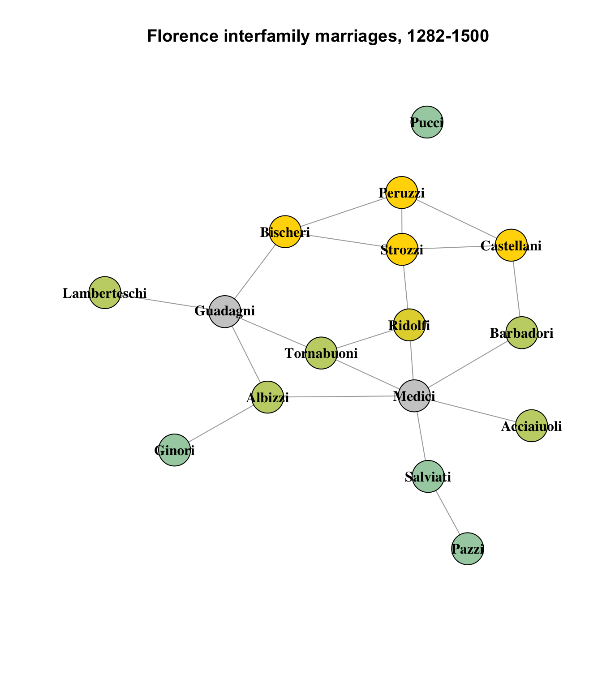
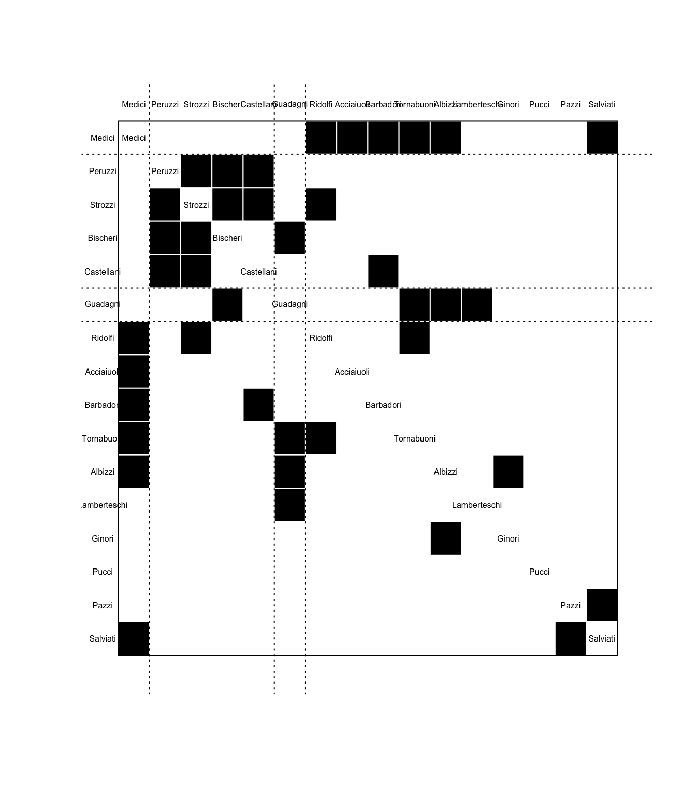

# Load the statnet version
data("florentine", package = "ergm")
flo_stat <- flomarriage
# Load the igraph version
data(flo)
# If the matrix is symmetric, it is undirected.
# https://mathworld.wolfram.com/UndirectedGraph.html
# We know the Florence marriage network is undirected, but code is always better.
flo_ig <- graph_from_adjacency_matrix(flo, mode = ifelse(isSymmetric(flo), "undirected", "directed"))Homework 6: Clustering and Blockmodels in the Florentine Wedding dataset
r
social networks
Yet more ways to look at the Florence data.
This week we will look at structural equivalence and blockmodels in the Florentine wedding data set. Structural equivalence is a way to look at subsections of a network that identifies nodes with similar connections to other nodes, such as parents of the same child, or children of the same parent.
We begin, as usual, by loading the Florence data in both the igraph and statnet packages.
The structural equivalence object is created with the default parameters, except for forcing the undirected mode. Printing the resulting object shows its creation parameters.
flo_stat.se <- sna::equiv.clust(flo_stat, mode = "graph")
print(flo_stat.se)Position Clustering:
Equivalence function: sedist
Equivalence metric: hamming
Cluster method: complete
Graph order: 16 The first thing to do is get a visual look at the default clustering dendrogram.
plot(flo_stat.se, labels = flo_stat.se$glabels)
What does this show us? Well, as with nearly every other observation we’ve looked at in this data set, one of the most obvious observations is how the Medici are once again separate from the other nodes (families) in the set. The fact that they are alone in the top left shows that they are dissimilar to all other nodes in the network.
If we look at the lower left corner of the graph, cam see that the Peruzzi and Strozzi families are structurally similar. Let’s look again at the basic network diagram, highlighting these families:
set.seed(1235)
oranges <- colorRampPalette(c("gold", "skyblue"))
col <- oranges(5)
vcol <- rep("gray80", vcount(flo_ig))
vcol[which(V(flo_ig)$name == "Peruzzi")] <- col[1]
vcol[which(V(flo_ig)$name == "Strozzi")] <- col[1]
plot(
flo_ig,
layout = layout_components(flo_ig),
edge.arrow.mode = 0,
vertex.label.color = "black",
vertex.shape = "circle",
vertex.color = vcol,
vertex.label.font = 2,
main = "Florence interfamily marriages, 1282-1500"
)
They are not identical - there are no structurally identical nodes in this network - but they are similar. They both connect to the Bischeri and Castellani families.1 The Strozzi also connect to the Ridolfi. This difference is represented by the height of the connector lines in the cluster dendrogram above.
Three other pairs of nodes show the same level of similarity:
set.seed(1235)
vcol <- rep("gray80", vcount(flo_ig))
vcol[which(V(flo_ig)$name == "Peruzzi")] <- col[1]
vcol[which(V(flo_ig)$name == "Strozzi")] <- col[1]
vcol[which(V(flo_ig)$name == "Acciaiuoli")] <- col[2]
vcol[which(V(flo_ig)$name == "Barbadori")] <- col[2]
vcol[which(V(flo_ig)$name == "Ginori")] <- col[3]
vcol[which(V(flo_ig)$name == "Pucci")] <- col[3]
vcol[which(V(flo_ig)$name == "Pazzi")] <- col[4]
vcol[which(V(flo_ig)$name == "Salviati")] <- col[4]
plot(
flo_ig,
layout = layout_components(flo_ig),
edge.arrow.mode = 0,
vertex.label.color = "black",
vertex.shape = "circle",
vertex.color = vcol,
vertex.label.font = 2,
main = "Florence interfamily marriages, 1282-1500"
)
This seems believable, overall; the least intuitive impression on this graph is that the Pucci family, which is the network’s lone isolate, is similar to the Ginori family on the other side of the graph, which connects only to the Albizzi family; nodes with similar structural equivalence are usually direct neighbors, since they are structurally equivalent due to their shared connections to other nodes.
Where this begins to be a bit less convincing is in the triad of the Tornabuoni, Albizzi and Lamberteschi families:
set.seed(1235)
vcol <- rep("gray80", vcount(flo_ig))
vcol[which(V(flo_ig)$name == "Tornabuoni")] <- col[5]
vcol[which(V(flo_ig)$name == "Albizzi")] <- col[5]
vcol[which(V(flo_ig)$name == "Lamberteschi")] <- col[5]
plot(
flo_ig,
layout = layout_components(flo_ig),
edge.arrow.mode = 0,
vertex.label.color = "black",
vertex.shape = "circle",
vertex.color = vcol,
vertex.label.font = 2,
main = "Florence interfamily marriages, 1282-1500"
)
The Tornabuoni and Albizzi seem reasonably similar, sharing 2 other connections with each other, but the Lamberteschi share only one with either of them (the Guadagni). It seems like a bit of a stretch to suggest that they are of the same level of similarity to each other, but it could be argued that the Lamberteschi are more similar to the Tornabuoni and Albizzi than to any other nodes in the network.
Finally, it’s instructive to look at the three nodes with no structurally similar peers: the Medici, Guadagni and Ridolfi:
set.seed(1235)
vcol <- rep("gray80", vcount(flo_ig))
vcol[which(V(flo_ig)$name == "Medici")] <- col[1]
vcol[which(V(flo_ig)$name == "Guadagni")] <- col[3]
vcol[which(V(flo_ig)$name == "Ridolfi")] <- col[5]
plot(
flo_ig,
layout = layout_components(flo_ig),
edge.arrow.mode = 0,
vertex.label.color = "black",
vertex.shape = "circle",
vertex.color = vcol,
vertex.label.font = 2,
main = "Florence interfamily marriages, 1282-1500"
)
These nodes are plainly quite different from any other nodes in the network, in terms of their connections.
If we wanted another way to describe the diagram - already quite complex despite the data set’s relatively small size - one way we might seek to do that is by breaking the diagram into a manageable number of sub-clusters that are similar to each other. And one way to achieve that is to use rectangular clustering based on height, describing the similarity threshold we feel is appropriate. For example, if we set the height to 8, we get:
plot(flo_stat.se, labels = flo_stat.se$glabels)
rect.hclust(flo_stat.se$cluster, h = 8)
This results in four clusters containing data (and two empty clusters). If we plot the results, we can see the clusters whose components the algorithm considers more similar to each other than to other nodes:
vcol <- rep("gray80", vcount(flo_ig))
vcol[which(V(flo_ig)$name == "Peruzzi")] <- col[1]
vcol[which(V(flo_ig)$name == "Strozzi")] <- col[1]
vcol[which(V(flo_ig)$name == "Bischeri")] <- col[1]
vcol[which(V(flo_ig)$name == "Castellani")] <- col[1]
vcol[which(V(flo_ig)$name == "Ridolfi")] <- col[2]
vcol[which(V(flo_ig)$name == "Acciaiuoli")] <- col[3]
vcol[which(V(flo_ig)$name == "Barbadori")] <- col[3]
vcol[which(V(flo_ig)$name == "Albizzi")] <- col[3]
vcol[which(V(flo_ig)$name == "Tornabuoni")] <- col[3]
vcol[which(V(flo_ig)$name == "Lamberteschi")] <- col[3]
vcol[which(V(flo_ig)$name == "Ginori")] <- col[4]
vcol[which(V(flo_ig)$name == "Pucci")] <- col[4]
vcol[which(V(flo_ig)$name == "Pazzi")] <- col[4]
vcol[which(V(flo_ig)$name == "Salviati")] <- col[4]
plot(
flo_ig,
layout = layout_components(flo_ig),
edge.arrow.mode = 0,
vertex.label.color = "black",
vertex.shape = "circle",
vertex.color = vcol,
vertex.label.font = 2,
main = "Florence interfamily marriages, 1282-1500"
)
On the whole, this appears to be a pretty reasonable partitioning of the network into clusters of structurally similar nodes. As we observed earlier, the Medici and Guadagni families are distinct enough not to have any structurally equivalent peers in the network, and the Ridolfi, while itself also lacking structurally similar peers, is still more similar to the other clusters than it is to the Medici or Guadagni.
Blockmodel partitions
Finally, a brief look at blockmodel partitions, which are another way to visualize the clusters described above. Keeping the same height parameter of 8 from the above diagram, we can generate a blockmodel partition from the data:
flo_stat.bm <- blockmodel(flo_stat, flo_stat.se, h = 8, mode = "graph")
flo_stat.bm
Network Blockmodel:
Block membership:
Acciaiuoli Albizzi Barbadori Bischeri Castellani Ginori
1 1 1 2 2 1
Guadagni Lamberteschi Medici Pazzi Peruzzi Pucci
3 1 4 1 2 1
Ridolfi Salviati Strozzi Tornabuoni
1 1 2 1
Reduced form blockmodel:
Acciaiuoli Albizzi Barbadori Bischeri Castellani Ginori Guadagni Lamberteschi Medici Pazzi Peruzzi Pucci Ridolfi Salviati Strozzi Tornabuoni
Block 1 Block 2 Block 3 Block 4
Block 1 0.06666667 0.0500000 0.30 0.6
Block 2 0.05000000 0.8333333 0.25 0.0
Block 3 0.30000000 0.2500000 NaN 0.0
Block 4 0.60000000 0.0000000 0.00 NaN# Code from the tutorial
plot.block<-function(x=blk_mod, main=NULL, cex.lab=1){
plot.sociomatrix(x$blocked.data, labels=list(x$plabels,x$plabels),
main=main, drawlines = FALSE, cex.lab=cex.lab)
for (j in 2:length(x$plabels)) if (x$block.membership[j] !=
x$block.membership[j-1])
abline(v = j - 0.5, h = j - 0.5, lty = 3, xpd=FALSE)
}
plot.block(flo_stat.bm, cex.lab=.5)
THe four clusters are indicated by the dotted horizontal lines in the diagram; each black box is a connection between the nodes along the left and top axes. The more filled-in a partition is, the more similar the clustered elements are to each other; this is also indicated numerically in the chart above with measures closer to 1.
The most obvious observations to make here are:
The cluster with the highest inner similarity rating is 2, with a numeric rate of 0.83 (on a scale of 0 to 1). This can be interpreted to mean that the Peruzzi, Strozzi, Bischeri and Castallani familes mostly intermarried among each other. (Cousins!)
The grouping returned by
rect.hclustwith the samehparameter of 8 does not match the grouping returned byblockmodelwith the same value. It gets the first three groups correct, but all of the remaining nodes are packed together into the fourth group. I suspect this may be a bug in the blockmodel code, related to the fact that there were 4 clusters in therect.hclustcode that had data, and 2 without, but blockmodel considered the empty ones as valid, and then stopped at 4. This will need to be investigated.
Footnotes
(Note that their connections to each other are not part of this calculation; it is only assessing nodes they have in common with each other.↩︎